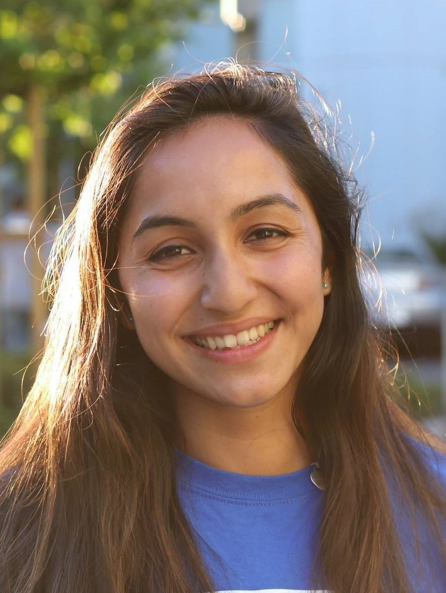
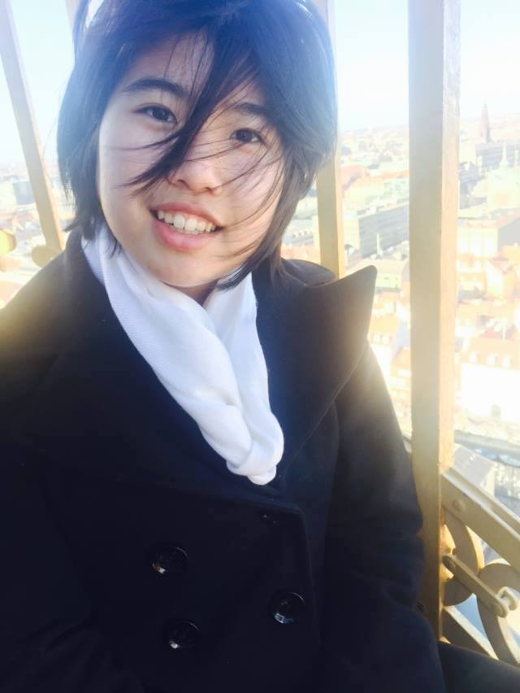
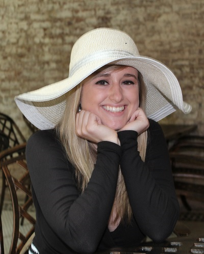
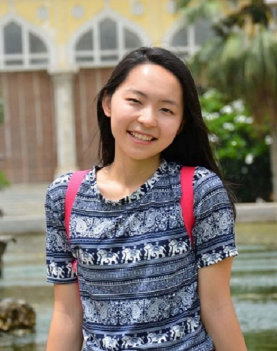
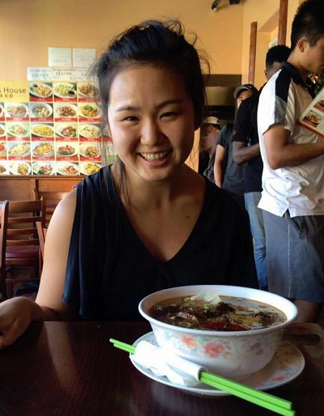

Executive Members
|  |
Anika Ayyar
Hi! I am Anika, and I’m a rising junior majoring in Computer Science and Classical Languages. I am an adventure seeker and outdoor enthusiast from Northern California, and I love to cook, run, and watch Silicon Valley in my free time.
CS Courses Taken: I have taken CS 201, 230, 250, and I am taking 310 and 290 in the fall.
Fun Fact: I’m born on a leap day so I’m technically five years old.
|
|  |
Tina Chen
I am a senior studying computer science. I'm interested in the intersection of computer science and medicine, especially in app development, and big data.
CS Courses Taken: I have taken Data Structures and Algorithms, Computer Architecture, Discrete Math for Computer Science, and Design and Analysis of Algorithms, and am looking forward to taking several bioinformatics courses.
Fun Fact: study Krav mega and karate!
|
|  |
Petra Ronald
Hey everyone! I am a senior at Duke this year majoring in Computer Science with certificates in Policy Journalism and Media Studies and Markets and Management. On campus, I am a part of the Maxwell SLG and Business Oriented Women. I also work for the Duke Reporters' Lab and do some design work for the Chronicle. I have taken all the required classes for the CS major so if you have any questions, feel free to reach out!
CS Courses Taken: All required CS courses, CS 344 (Computer Graphics), CS 308,
Fun Fact: I wanted to be Elle Woods in Legally Blonde when I was younger
|
|  |
Ying Qi
Hello! I am Ying and I am a senior studying Computer Science with a minor in Statistics. On campus, I am involved with the Community Empowerment Fund, where I work with single mothers on financial security, budgeting, and employment. I am also a member of Duke Robotics, where I do research in AI. In my free time, I enjoy running, having spontaneous conversations over coffee, brainstorming ideas, and working on side projects.
CS Courses Taken: Operating Systems, Network Architecture, Computer Architecture, Research Independent Study, Software Design and Implementation, Algorithms, Computational Biology, Discrete Mathematics.
Fun Fact: I sleep laugh.
|
|  |
Anna Miyajima
Hi everyone! I’m a senior from SoCal majoring in CS. I chose my major because I think that tech is the story of our time, and I’m excited about new products and how they affect our lives. Robotics is the area of tech I’m most excited about - I do research with Dr. Zavlanos to learn more about the field. Outside of tech I love food, photography, yoga, and and traveling.
CS Courses Taken: I’ve completed all of the courses for the CS major, and I’ve taken electives such as CS308 and CS216 as well.
Fun Fact: My dream is to work in Zurich some day.
|

|
Jasmine Lu
Hello! My name is Jasmine and I'm a rising sophomore planning to double major in ECE/CS. Feel free to reach out to me for anything as I love to meet new people and help out as much as I can!
CS Courses Taken: This fall I'll be taking CompSci 201 and a BME 590 class that deals with software applications for biomedical technologies. Last semester, I took ECE 110 and tried to pick up new languages through codeacademy & W3Schools.
Fun Fact: I love to draw/paint and my most prized possession at the moment is a journal I started during my DukeEngage trip to Tanzania with sketches of the different sights/experiences I've had.
|